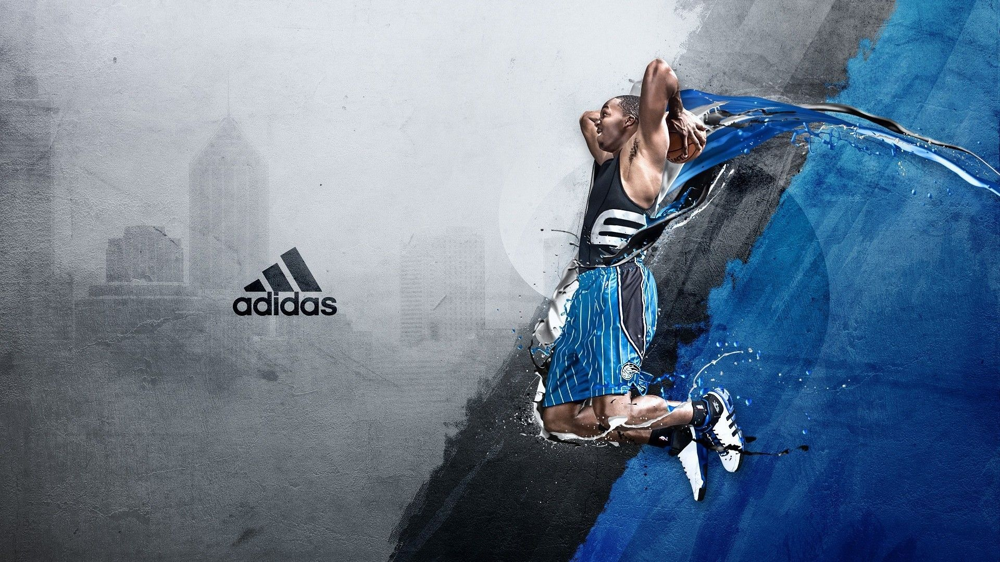

 The esports industry in India is set for a rapid growth in the country with the size of industry touching a total of ₹1,100 crore over next three years by FY25, the Federation of Electronic Sports Associations of India (FEAI) said on Friday.2021 will be remembered as one of the most challenging yearsin the history of Indian Esports. Stealing the spotlight was the prolonged ban on its most popular esports title, PUBG Mobile. However, the esports scene in India not survived through all odds — it entered one of the most transitional periods of its growth. According to a report by the Federation of Indian Chambers of Commerce & Industry (FICCI) and EY India, the Indian esports industry scaled to INR 3 billion (~£29.9m) in FY2021 and is expected to reach INR 11 billion (~£109m) by FY2025. We cast a spotlight on some of the major happenings that took place in the year and what impact they are expected to have going forth.Krafton’s battle royale, PUBG, suffered a 9-month ban rebranded version — Battlegrounds Mobile India (BGMI) — finally released with a grand launch event in June. The launch event of the game, however, saw the highest peak viewership of the title in the country at 547,888. That said, in the meantime, PC titles such as Valorant had already received the necessary boost needed to take off in the Indian esports scene. One of the most interesting aspects to note here is that the streamers, as well as the community, shifted their interest to the latest PC titles such as Valorant, Apex Legends, and Warzone instead of migrating to other mobile titles. The community, including the tournament organisers, took this opportunity to diversify their portfolios, opening up the market and audiences to new experiences. Skyesports introduced Skyesports League featuring Valorant as the main title for the event. With a number of top mobile esport personalities participating in Valorant events, it garnered a lot of attention from the community with recording-breaking success. A total of 8 million viewers tuned in to watch the Skyesports Valorant League 2021, according to Esports Charts, a 200 percent growth over its previous season in 2020.
Although competitive gaming is now a global phenomenon, you might have to search around to find esports websites who supply a good amount of esports news. So we are going to show you the best esports news sites so that you can keep up with the latest competitive gaming action. Finding esports websites with decent news coverage of competitive gaming is essential if you want to win your esports bets. Not only will you find out the latest form for your favorite esports teams, but knowing rumors about the most famous gamers and streamers can also help you land a winning.